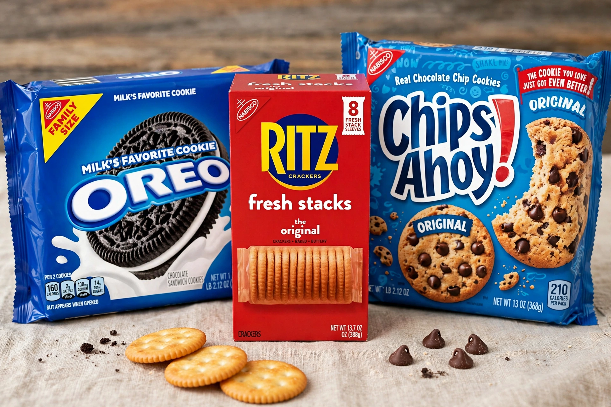

| Founded | 1898 (as National Biscuit Company), Chicago, Illinois |
|---|---|
| Headquarters | East Hanover, New Jersey, US |
| Parent | Mondelēz International (since 2012) |
| Products | Cookies, crackers, snacks |
| Key brands | Oreo, Ritz, Chips Ahoy!, Triscuit, Wheat Thins, Belvita, Teddy Grahams |
Nabisco (originally the National Biscuit Company) is an American manufacturer of cookies and snacks headquartered in East Hanover, New Jersey. The company, founded in 1898 by the merger of regional bakery groups, is a subsidiary of Mondelēz International.
The National Biscuit Company formed in 1898 from the merger of the New York Biscuit Company, the American Biscuit and Manufacturing Company and others, uniting hundreds of bakeries under Adolphus Green. Its innovations defined packaged baking: the Uneeda Biscuit (1899) was sold in a sealed, moisture-proof package and promoted as the first nationally advertised biscuit brand. The famous red-triangle logo, with its orb-and-cross device, dates from this era; the name "Nabisco" was adopted as the corporate name in 1971.
Flagship launches included Barnum's Animal Crackers (1902), the Oreo (1912) — later the world's best-selling cookie — Ritz Crackers (1934), Chips Ahoy! (1963) and SnackWell's (1992). In 1985 Nabisco merged with R.J. Reynolds to form RJR Nabisco, the subject of the largest leveraged buyout of its time (1988, by KKR), famously chronicled in Barbarians at the Gate. After tobacco and food were separated, Nabisco was acquired by Philip Morris/Kraft Foods in 2000, and passed to Mondelēz when Kraft split in 2012.
Nabisco's portfolio includes Oreo, Chips Ahoy!, Ritz, Triscuit, Wheat Thins, Premium saltines, Nilla Wafers, Belvita breakfast biscuits, Teddy Grahams, Honey Maid graham crackers and Barnum's Animals. Many brands are sold internationally under Mondelēz, though in some markets they carry local names.
The company operates bakeries across the United States and abroad; production shifts — including the controversial 2015–16 move of some Chicago lines to Mexico — have drawn union and political attention. Its historic Chelsea Market complex in New York, where the Oreo was created, is now a food hall and offices.
See also: Mondelēz International · Oreo · Christmas